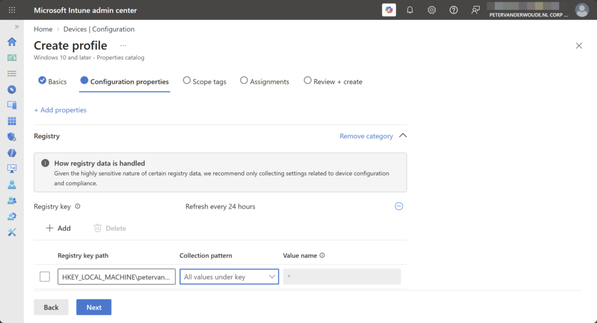
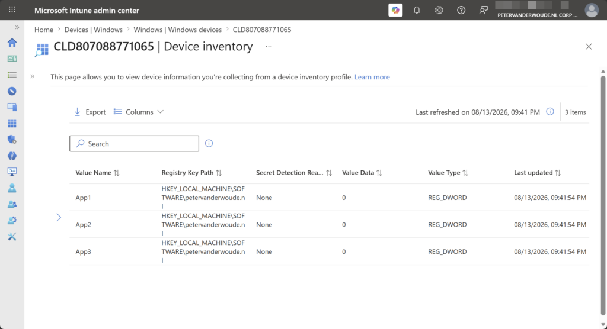

This week is all about the recently introduced capability to collect Windows registry data (or in other words, the ability to perform registry inventory). A lot has been written about that capability, but it is such an important enhancement that it deserves a place on this blog as well. Until this moment, IT administrators often used scripting solutions to collect specific Windows registry data. With the introduction of the collection of Windows registry data, the need for such solutions should decline. There will, however, always be scenarios in which it is better to still hold on to those scripting solutions. The capability to collect Windows registry data is part of the earlier introduced device inventory, using the Properties Catalog. That means that the collected information is available per device. This post will the capability to collect Windows registry data, the configuration, and the experience.
Introducing Windows registry data inventory
Collecting additional information is not something completely new, but the capability to collect Windows registry data is a new addition. It was already possible to query for different hardware details and installed application details, and now it is also possible to collect different registry data details. That can be achieved by using the Properties catalog. The Properties catalog now contains an additional property that can be used for collecting Windows registry data. With that property the IT administrator can collect values under HKEY_LOCAL_MACHINE, and that can be achieved by looking for a single value, all values directly under a key, and the same value across sub-keys. The collected Windows registry data will be available within the Device inventory of the device. That means that the information is available per device. The collected information is capped at 6KB per registry value, and 100 registry keys per device. Besides all of that, it is good to keep in mind that there is some detection logic that helps with identifying a preventing the ingestion of values that might contain sensitive or confidential data (such as credentials, secrets, tokens, certificates, and more). If a value is flagged as potentially sensitive, it will not be collected.
Configuring Windows registry data inventory
When looking at the configuration of the new Windows registry data inventory, it is all about the Properties catalog. That profile can be used to determine the additional registry properties that should be part of the inventory. After applying that configuration, the Microsoft Device Inventory Agent will be utilized to perform the inventory activities, just like with the other inventory activities. The following steps walk through the creation of that profile and enabling additional Windows registry data properties. This example is focused on organization specific application installation information that is stored in the registry.
- Open the Microsoft Intune admin center portal and navigate to Devices > Windows > Configuration
- On the Windows | Configuration page, click Create > New policy
- On the Create a profile blade, select Windows 10 and later > Properties catalog and click Create
- On the Basics page, provide at least a unique name to distinguish it from similar profiles and click Next
- On the Configuration settings page, as shown below in Figure 1, click Add settings to browse through the available properties and at least select Registry that should be added to the inventory, go through the following and click Next
- Under Registry, click Add to add any registry value that should be added to the inventory. Specify the registry path in HKEY_LOCAL_MACHINE, choose the collection pattern and if needed specify the registry value.
{kind=link}

- On the Scope tags page, configure the required scope tags and click Next
- On the Assignments page, configure the assignment for the required user or devices and click Next
- On the Review + create page, verify the configuration and click Create
Note: The Microsoft Device Inventory Agent will be installed when a Properties catalog profile is assigned.
Experiencing Windows registry data inventory
When the configuration for the new Windows registry data inventory is in place, it is pretty straightforward to experience the configuration. Locally on the device that starts with the Microsoft Device Inventory Agent that will be installed, when it wasn’t installed yet for other additional inventory configurations using the Properties catalog. That installation will be visible in C:\Program Files\Microsoft Device Inventory Agent and the InventoryService service will be available between the Windows services. The logs can be followed at C:\Program Files\Microsoft Device Inventory Agent\Logs for more details about the inventory.
The collected Windows registry data inventory can be found in the Microsoft Intune admin center portal, by selecting a device and navigating to Monitor > Device inventory (as shown below in Figure 2). The inventory will be available within 24-hours. It provides a clear view of the collected registry keys, values, and data. This example is focused on organization specific application installation information that is stored in the registry. That information can be made as extensive as needed.
{kind=link}

More information
For more information about the enhanced app inventory for Windows devices, refer to the following docs.
Discover more from All about Microsoft Intune
Subscribe to get the latest posts sent to your email.